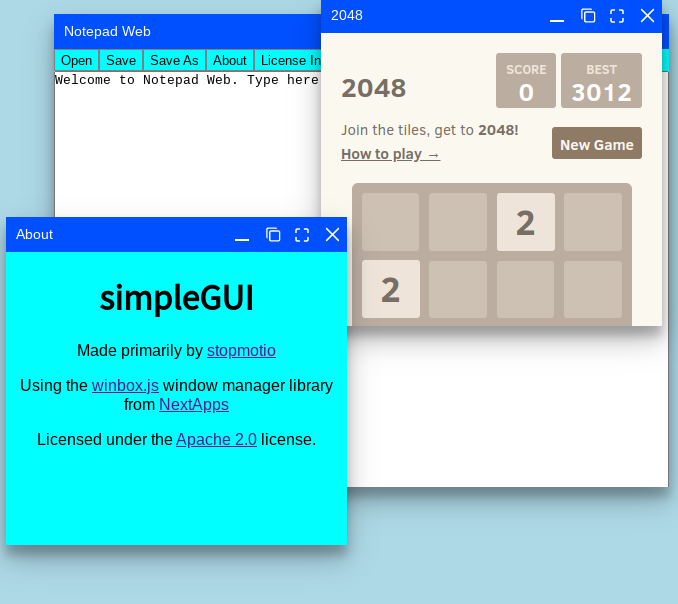
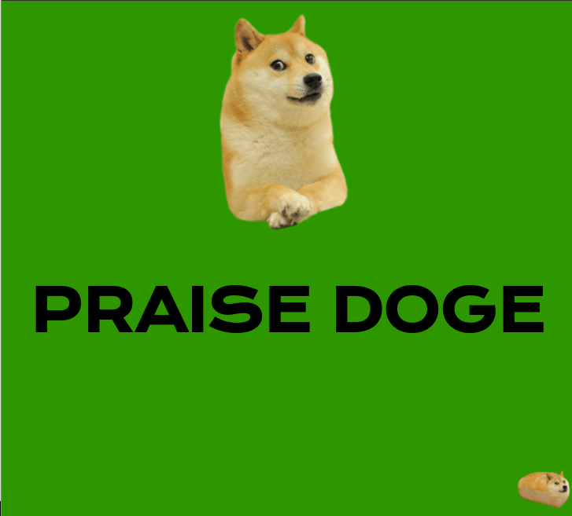
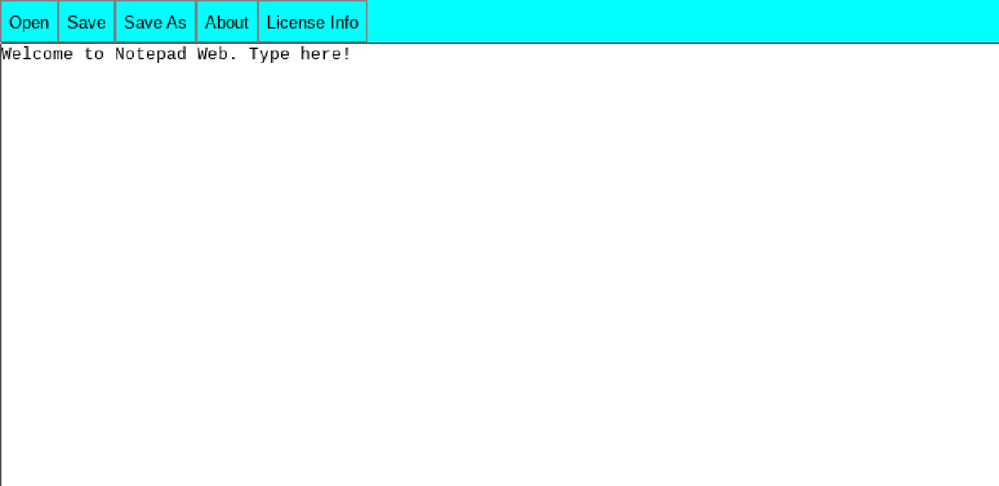

Currently, just a few repositories. I haven't been active for very long...
If you are interested in using these, for any purpose other than by themselves, please check the license for information reguarding how you can use these in your projects and also what you must do to accomodate them.
simpleGUI
simpleGUI is a desktop-like webGUI intended for use in embedded systems, once again made as a challenge. It uses the winbox.js window manager, and in fact was made possible entirely by it. As WinBox is licensed under Apache 2.0, simpleGUI is also licensed under Apache 2.0 for the sake of legal simplicity. I wanted to use MIT but was not entirely sure that the licenses are compatible. By default, Notepad Web, 2048, a web browser, and an info program are included, but it is easy to develop custom applications for simpleGUI. (it takes standard webpages readily with no modification, except for pages protected by frame killers)
PRAISE DOGE
Bored in class, I asked my peers, "Give me an idea", and someone said "A website for doge". So I made it in the 10 minutes I had. It's licensed under the MIT license for maximum doge praise. PRAISE DOGE.
Notepad Web
Notepad Web is a text editor(like notepad for Windows) but useable through a browser. It's a very simple concept I made to test my merit as a web application creator. It is licensed under the GNU GPL 3.0 License, which you can read in it's entirety in either the editor itself or the GitHub repo. Older versions exist that are under GPL 2.0, even though 3.0 was out at that time.